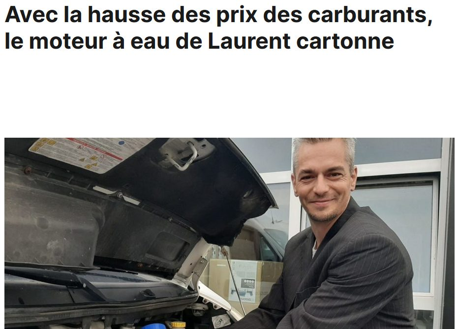
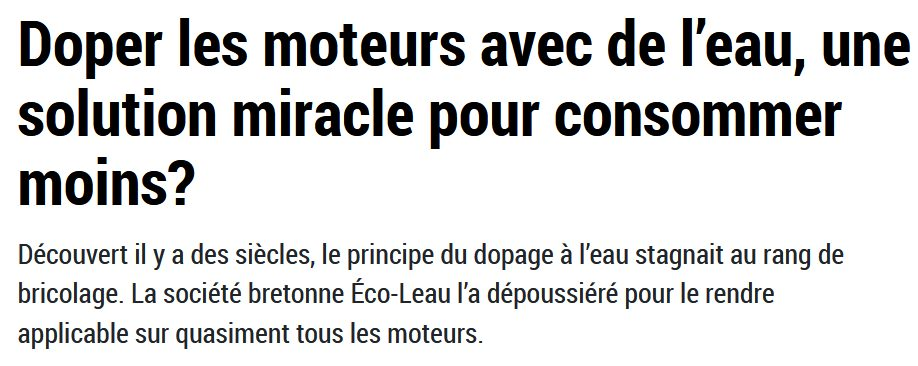
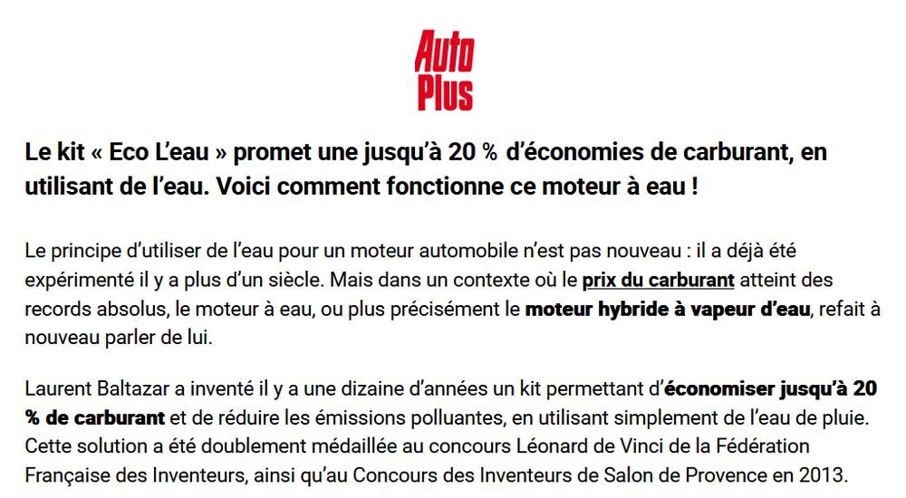
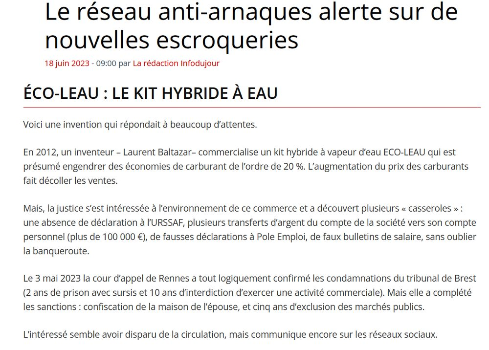
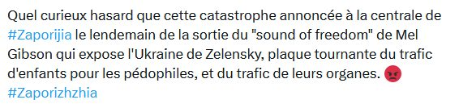
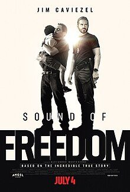
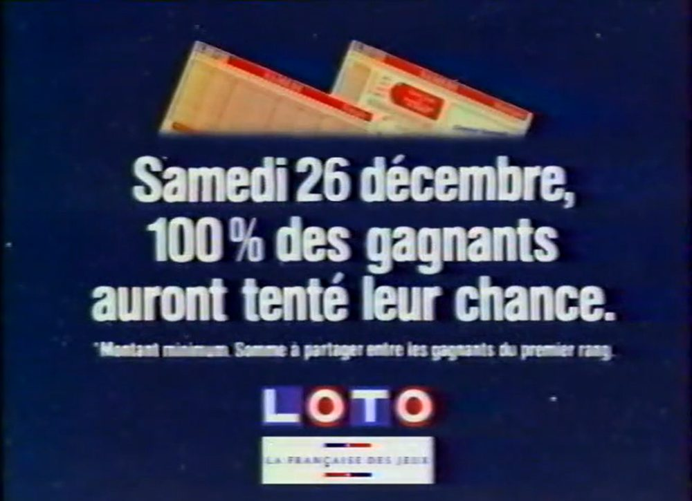
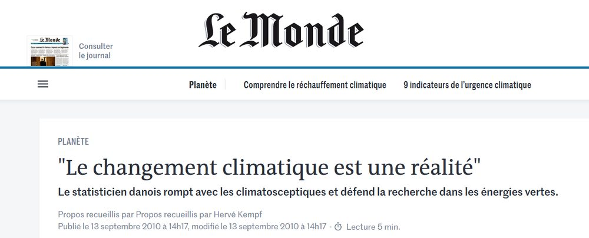
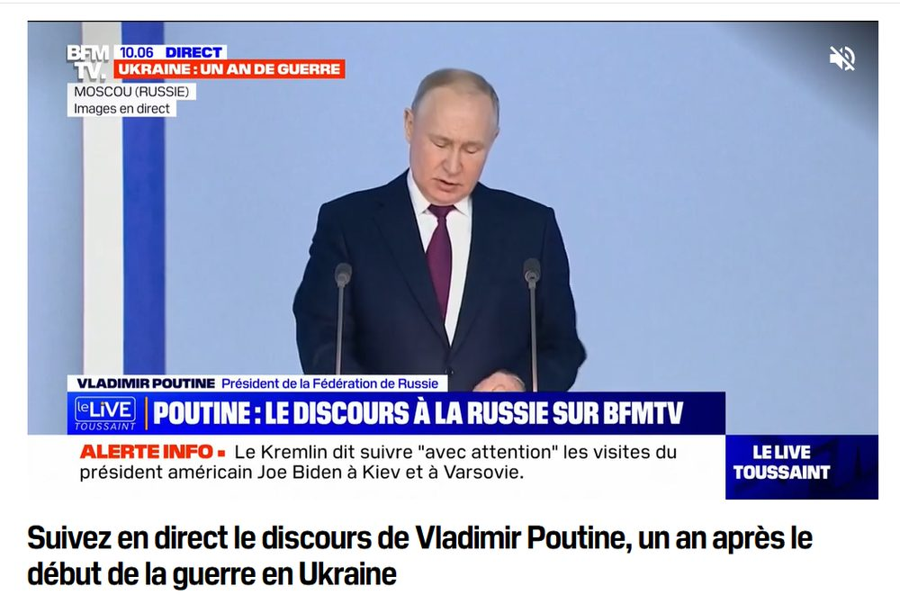

1. Corrélation, concomitance, causalité : ne pas confondre.1. Correlation, coincidence, causation: not to be confused.
2. Le catalogue des sophismes les plus courants.2. A catalogue of the most common fallacies.
3. Étude de cas : une arnaque construite sophisme après sophisme.3. Case study: a scam built fallacy after fallacy.
4. Biais du survivant, rasoir d'Ockham, neutralité des médias.4. Survivorship bias, Occam's razor, media neutrality.
Un petit jeu pour commencerA little game to start with
Les gens qui s'endorment avec les chaussures aux pieds ont plus de chances d'avoir mal à la tête en se réveillant le lendemain.People who fall asleep with their shoes on are more likely to wake up with a headache the next day.
Pourquoi ?Why?
Est-ce que dormir avec ses chaussures provoque le mal de tête ? Ou bien y a-t-il autre chose qui explique les deux à la fois ?Does sleeping with your shoes on cause the headache? Or is there something else that explains both at once?
La fausse causeThe false cause
Chaussures aux piedsShoes on
→ ?
Mal de têteHeadache
Alcool (la veille)Alcohol (the night before)
↙ ↘
Chaussures aux piedsShoes on
Mal de têteHeadache
Une personne qui s'endort tout habillée, chaussures comprises, a souvent trop bu la veille, ce qui explique aussi le mal de tête. Les chaussures ne causent rien : les deux ont une cause commune.Someone who falls asleep fully dressed, shoes included, has often had too much to drink the night before, which also explains the headache. The shoes cause nothing: both share a common cause.
Trois mots à ne pas confondreThree words not to confuse
Deux évènements arrivent en même temps, sans lien entre eux.Two events happen at the same time, with no link between them.
CorrélationCorrelation
Deux évènements sont liés statistiquement, sans que l'un provoque l'autre.Two events are statistically linked, without one causing the other.
CausalitéCausation
L'un des évènements provoque réellement le second.One of the events genuinely causes the other.
ConcomitanceCoincidence
Plus Nicolas Cage sort de films, plus il y a de morts dans les piscines aux États-Unis.The more films Nicolas Cage releases, the more people drown in swimming pools in the US.
Une coïncidence statistique amusante… mais aucun lien de cause à effet.An amusing statistical coincidence… but no cause-and-effect link.
CorrélationCorrelation
Plus on consomme de produits transformés, plus il y a de cancers.The more processed food we eat, the more cancer cases there are.
Source : étude Nutrinet-Santé, un lien statistique réel, mais qui ne prouve pas à lui seul la causalité.Source: the Nutrinet-Santé study, a real statistical link, but one that alone doesn't prove causation.
CausalitéCausation
Les médicaments et la guérison : comment prouver un vrai lien ?Medicine and recovery: how do you prove a real link?
Groupe contrôleControl group
Ne reçoit pas le médicament (ou reçoit un placebo). Sert de référence.Doesn't receive the drug (or receives a placebo). Serves as a baseline.
Groupe testTest group
Reçoit le médicament. On compare son évolution à celle du groupe contrôle.Receives the drug. Its progress is compared to the control group's.
C'est la comparaison contrôlée, pas la simple observation, qui permet de parler de causalité.It's the controlled comparison, not simple observation, that lets us talk about causation.
Étude de casCase study
Le chocolat aide-t-il à décrocher un prix Nobel ?Does chocolate help you win a Nobel Prize?
En mettant simplement deux courbes côte à côte, sans jamais affirmer de causalité, on peut quand même laisser le lien se former dans l'esprit du lecteur. Est-ce alors une Fake News… ou juste une présentation trompeuse ?By simply putting two curves side by side, without ever claiming causation, you can still let the link form in the reader's mind. Is that fake news… or just a misleading presentation?
Étude de cas : le biais de causalitéCase study: the causality bias
Un adolescent meurt après une vaccination contre le papillomavirusA teenager dies after an HPV vaccination
« Le produit vaccinal ne serait pas en cause. »"The vaccine itself does not appear to be at fault."Agence Régionale de Santé, conclusion de l'enquêteRegional Health Agency, investigation conclusion
Deux évènements rapprochés dans le temps (concomitance) ont été lus comme une causalité, avant même la fin de l'enquête. C'est le biais de causalité : notre cerveau cherche toujours une explication, quitte à en inventer une trop vite.Two events close together in time (coincidence) were read as causation, even before the investigation ended. This is the causality bias: our brain always looks for an explanation, even if it means inventing one too fast.
Le piège des moyennesThe trap of averages
« Les ménages français détiennent en moyenne un patrimoine net de 446 000 € »"French households hold an average net worth of €446,000"
« C'est bien la preuve que la plupart des Français sont riches ! »"That's proof most French people are rich!"
Une moyenne peut être tirée vers le haut par une minorité très riche. Elle ne dit rien de la situation du Français « typique » : c'est la médiane qu'il faudrait regarder pour ça, et elle est bien plus basse.An average can be pulled upward by a very wealthy minority. It says nothing about the "typical" French person's situation: you'd need to look at the median for that, and it's much lower.
SophismeFallacy
Le biais d'autoritéAppeal to authority
Considérer qu'une personne qui a de l'autorité a forcément raison.Assuming that a person with authority must be right.
« Je suis le scientifique le plus cité au monde ! »"I'm the most cited scientist in the world!"
Être très cité, très diplômé ou très suivi ne rend pas une affirmation vraie : l'autorité ne remplace jamais la preuve. (Voir aussi le schéma de l'expérience de Milgram sur l'obéissance à l'autorité.)Being highly cited, highly qualified, or widely followed doesn't make a claim true: authority never replaces evidence. (See also Milgram's experiment on obedience to authority.)
« Mon voisin est un idiot, et il a des moustaches. Donc tous les moustachus sont des idiots. »"My neighbour is an idiot, and he has a moustache. So all men with moustaches are idiots."
Généraliser à partir d'un seul cas (ou d'un tout petit nombre) à l'ensemble d'un groupe.Generalising from a single case (or a tiny number) to an entire group.
SophismeFallacy
Le « vrai » écossaisThe "true" Scotsman
« Tous les Écossais sont roux ! - Non, mon voisin est écossais, et il a les cheveux blonds. - Alors ce n'est pas un vrai écossais ! »"All Scotsmen have red hair! - No, my neighbour is Scottish, and he has blond hair. - Then he's not a true Scotsman!"
Plutôt que d'admettre l'exception, on redéfinit la règle pour qu'elle reste vraie « par définition ».Rather than admit the exception, the rule gets redefined so it stays true "by definition".
SophismeFallacy
Le déshonneur par associationGuilt by association
« Vous êtes végétariens ? Vous savez qui d'autre était végétarien ? »"You're vegetarian? You know who else was vegetarian?"
Hitler ! Associer une idée à une personne détestable ne prouve rien sur la valeur de cette idée : c'est un raccourci rhétorique bien connu, popularisé sous le nom de « loi de Godwin ».Hitler! Linking an idea to a hated person proves nothing about the idea's worth: it's a well-known rhetorical shortcut, popularised as "Godwin's law".
SophismeFallacy
Le biais de la popularitéPopularity bias
Un champion adoré du public vend… des voitures. Ce n'est pas son expertise automobile qui convainc, c'est la sympathie qu'il inspire.A champion beloved by the public sells… cars. It's not his automotive expertise that convinces us, it's the likeability he inspires.
Considérer qu'une chose est bonne parce qu'elle est ancienne.Assuming that something is good because it's old.
« Ma boulangerie existe depuis 1659, elle est donc forcément bonne ! » « Cette technique de soin est utilisée depuis l'Antiquité ! »"My bakery has existed since 1659, so it must be good!" "This treatment has been used since Antiquity!"
SophismeFallacy
Appel à la nouveautéAppeal to novelty
Considérer qu'une chose est forcément meilleure parce qu'elle est nouvelle : le symétrique exact de l'appel à l'ancienneté.Assuming something is necessarily better because it's new: the exact mirror of the appeal to tradition.
SophismeFallacy
L'appel à la natureAppeal to nature
Considérer que si quelque chose est naturel, c'est forcément bon.Assuming that if something is natural, it must be good.
« Tu devrais goûter ce champignon, il est délicieux et 100 % naturel ! »"You should try this mushroom, it's delicious and 100% natural!"
Les champignons les plus toxiques sont, eux aussi, parfaitement naturels.The most toxic mushrooms are also perfectly natural.
SophismeFallacy
La pente savonneuseThe slippery slope
Considérer qu'un évènement entraînera forcément des conséquences bien plus graves par la suite.Assuming that one event will necessarily lead to much more serious consequences down the line.
« Si nous masquons les paquets de cigarettes, demain on nous demandera de masquer nos bouteilles de vin ! Et ce sera la fin de notre terroir ! »"If we hide cigarette packs today, tomorrow they'll ask us to hide our wine bottles! And that'll be the end of our heritage!"
Considérer que les choses « évidentes » sont forcément vraies.Assuming that "obvious" things must be true.
« La Terre est plate, c'est évident ! »"The Earth is flat, it's obvious!"
SophismeFallacy
Le sophisme du pire ailleursThe "worse elsewhere" fallacy
Expliquer qu'il existe des situations plus graves ailleurs, pour justifier ou minimiser une situation présente.Pointing to worse situations elsewhere, to justify or minimise a present one.
« Pourquoi défendre le droit des femmes en France ? Allez donc en Afghanistan ! »"Why defend women's rights in France? Go to Afghanistan instead!"
SophismeFallacy
Le sophisme de l'homme de pailleThe straw man fallacy
Déformer la position de l'adversaire pour la rendre plus facile à attaquer, puis attaquer cette version caricaturale plutôt que l'argument réel.Distorting an opponent's position to make it easier to attack, then attacking that caricature instead of the real argument.
Considérer qu'une chose est vraie tant qu'on n'a pas démontré qu'elle était fausse.Assuming something is true as long as it hasn't been proven false.
« Personne n'a prouvé que ce ne sont pas des extraterrestres qui ont construit les pyramides. » L'absence de preuve n'est pas une preuve."No one has proven aliens didn't build the pyramids." Absence of evidence is not evidence.
SophismeFallacy
Le faux dilemmeThe false dilemma
Ne présenter que deux options, alors que d'autres sont tout aussi possibles.Presenting only two options, when other possibilities exist just as well.
« Si vous êtes CONTRE cette loi, vous êtes POUR les assassins d'enfants ! »"If you're AGAINST this law, you're FOR child murderers!"
Le faux dilemme, dans la vraie vieThe false dilemma, in real life
Un exemple observé sur les réseaux sociaux américainsAn example observed on American social media
Réduire tout un débat politique à deux camps opposés (ici « l'Amérique » contre « le communisme ») est un faux dilemme classique, quel que soit le bord politique qui l'utilise.Reducing an entire political debate to two opposing camps (here "America" versus "communism") is a classic false dilemma, whichever political side uses it.
SophismeFallacy
Le sophisme du juste milieuThe middle ground fallacy
Considérer que la solution intermédiaire est toujours la plus juste.Assuming the middle-ground solution is always the fairest one.
Maintien de l'esclavage, ou abolition totale de l'esclavage ? Le « compromis » entre les deux n'est pas plus juste que l'une des deux positions.Keep slavery, or abolish it entirely? The "compromise" between the two is no fairer than either position.
SophismeFallacy
Le sophisme du gruyèreThe Swiss cheese fallacy
« Plus il y a de gruyère, plus il y a de trous. Et plus il y a de trous, moins il y a de gruyère. Donc plus il y a de gruyère, moins il y a de gruyère ! »"The more cheese, the more holes. And the more holes, the less cheese. So the more cheese, the less cheese!"
Question pour vousA question for you
Il existe une maladie grave. Les scientifiques mettent au point un test. Si vous avez la maladie, le test sera positif à coup sûr.There is a serious disease. Scientists develop a test. If you have the disease, the test will certainly be positive.
Mais ce test peut aussi donner un « faux positif » : il peut dire que vous êtes malade alors que vous ne l’êtes pas. Il y a 5 % de chances que le test soit positif sans que vous soyez malade.But the test can also give a "false positive": it can say you are ill when you are not. There is a 5% chance the test is positive although you are not ill.
Vous faites le test : il est positif. Êtes-vous inquiet ?You take the test: it is positive. Are you worried?
Nouvelle informationNew information
Vous apprenez que cette maladie est très rare : elle ne touche qu’une personne sur mille.You learn that the disease is very rare: it affects only one person in a thousand.
Vous faites le test : il est positif. Êtes-vous inquiet ?You take the test: it is positive. Are you worried?
Sur 1 000 personnes testées, 1 est malade… et environ 50 reçoivent un faux positif. Un test positif ne donne donc qu’environ 2 % de chances d’être malade.Out of 1,000 people tested, 1 is ill… and about 50 get a false positive. A positive test therefore means only about a 2% chance of being ill.
SophismeFallacy
Le sophisme du procureurThe prosecutor’s fallacy
« On sait que le coupable possède un trait génétique que l’on trouve chez seulement 10 % de la population. L’accusé possède ce trait. Il y a donc 90 % de chances que l’accusé soit coupable. »"We know the culprit has a genetic trait found in only 10% of the population. The accused has this trait. So there is a 90% chance the accused is guilty."
SophismeFallacy
Le sophisme du procureurThe prosecutor’s fallacy
Le procès de Sally Clark.The trial of Sally Clark.
La charge de la preuveThe burden of proof
La théière de RussellRussell’s teapot
« Si je suggérais qu’entre la Terre et Mars se trouve une théière de porcelaine en orbite elliptique autour du Soleil, personne ne serait capable de prouver le contraire pour peu que j’aie pris la précaution de préciser que la théière est trop petite pour être détectée par nos plus puissants télescopes. Mais si j’affirmais que, comme ma proposition ne peut être réfutée, il n’est pas tolérable pour la raison humaine d’en douter, on me considérerait aussitôt comme un illuminé. »"If I were to suggest that between the Earth and Mars there is a china teapot revolving about the sun in an elliptical orbit, nobody would be able to disprove my assertion provided I were careful to add that the teapot is too small to be revealed even by our most powerful telescopes. But if I were to go on to say that, since my assertion cannot be disproved, it is intolerable presumption on the part of human reason to doubt it, I should rightly be thought to be talking nonsense."
La charge de la preuveThe burden of proof
En science comme en droit, la charge de la preuve incombe à celui qui affirme quelque chose.In science as in law, the burden of proof lies with whoever makes a claim.
SophismeFallacy
Le sophisme du sophismeThe fallacy fallacy
Ce n’est pas parce qu’une personne utilise des sophismes dans son argumentation…Just because someone uses fallacies in their argument…
… qu’elle le fait exprès.… doesn’t mean they are doing it on purpose.
… que ses propos sont faux.… or that what they say is false.
Quiz : repérez le sophismeQuiz: spot the fallacy
Cliquez sur chaque carte pour découvrir la réponse.Click each card to reveal the answer.
« Cette technique de soin est utilisée depuis l'Antiquité, elle doit forcément être efficace. »"This treatment has been used since Antiquity, so it must be effective."
Appel à l'anciennetéAppeal to tradition
L'ancienneté d'une pratique ne dit rien de son efficacité réelle.How old a practice is says nothing about how effective it actually is.
« Si on commence à réguler ce produit, demain on interdira tout, et après-demain on nous enlèvera nos libertés ! »"If we start regulating this product, tomorrow they'll ban everything, and the day after they'll take away our freedoms!"
Pente savonneuseSlippery slope
Une chaîne de conséquences de plus en plus graves, présentée comme inévitable sans le démontrer.A chain of increasingly serious consequences, presented as inevitable without proving it.
« Tu es contre cette loi ? Donc tu es pour les criminels ! »"You're against this law? So you're for criminals!"
Faux dilemmeFalse dilemma
Seulement deux options sont présentées, alors que d'autres positions nuancées existent.Only two options are presented, when other nuanced positions exist.
« Mon adversaire veut réguler un peu les banques : il veut donc détruire le capitalisme ! »"My opponent wants some bank regulation: so he wants to destroy capitalism!"
Homme de pailleStraw man
On déforme la position réelle de l'adversaire pour la rendre plus facile à attaquer.The opponent's real position is distorted to make it easier to attack.
« Personne n'a prouvé que les extraterrestres n'existent pas, donc ils existent. »"No one has proven aliens don't exist, so they exist."
Appel à l'ignoranceAppeal to ignorance
L'absence de preuve du contraire n'est pas une preuve.Absence of evidence to the contrary is not evidence.
« Ce produit est 100 % naturel, donc il ne peut pas être dangereux. »"This product is 100% natural, so it can't be dangerous."
Appel à la natureAppeal to nature
Naturel ne veut pas dire inoffensif : de nombreux poisons sont parfaitement naturels.Natural doesn't mean harmless: plenty of poisons are perfectly natural.
« Un million de personnes ne peuvent pas se tromper ! »"A million people can't be wrong!"
Appel à la popularitéAppeal to popularity
Le nombre de personnes qui croient une chose ne la rend pas vraie pour autant.The number of people who believe something doesn't make it true.
« Trouvons un compromis : gardons l'esclavage un jour sur deux. »"Let's find a compromise: keep slavery every other day."
Sophisme du juste milieuMiddle ground fallacy
Le compromis entre une position juste et une position injuste n'est pas automatiquement le plus juste.The compromise between a just position and an unjust one isn't automatically the fairest.
Étude de cas : le moteur à eauCase study: the water-powered engine
Une arnaque bien réelle, construite sophisme après sophisme.A very real scam, built fallacy after fallacy.
Effet David contre GoliathThe David vs. Goliath effect
« Avec la hausse des prix des carburants, le moteur à eau de Laurent cartonne »"As fuel prices rise, Laurent's water-powered engine is a hit"

« 20 % de carburant en moins » : l'inventeur, présenté comme un David face aux Goliath de l'industrie automobile, inspire d'emblée la sympathie."20% less fuel": the inventor, presented as a David against the Goliaths of the car industry, instantly inspires sympathy.
Appel à la popularitéAppeal to popularity
« 50 % de croissance, 150 000 € de chiffre d'affaires »"50% growth, €150,000 in revenue"
Le succès commercial est présenté comme une preuve d'efficacité, alors qu'il ne prouve que le succès commercial.Commercial success is presented as proof of effectiveness, when it only proves commercial success.
Appel à l'anciennetéAppeal to tradition
« Doper les moteurs avec de l'eau, une solution miracle… découverte il y a des siècles »"Boosting engines with water, a miracle solution… discovered centuries ago"

Témoignage personnelPersonal testimony
« Avec un plein de 50 litres, je suis passé de 730 à plus de 1000 km »"With a 50-litre tank, I went from 730 to over 1000 km"
Jean-Claude, client satisfait. Un témoignage isolé, même sincère, ne remplace jamais une mesure contrôlée.Jean-Claude, satisfied customer. A single testimony, even a sincere one, never replaces a controlled measurement.
La presse spécialisée en parleThe trade press covers it
Le kit « Eco L'eau » couvert par Auto PlusThe "Eco L'eau" kit covered by Auto Plus

Chaque nouvel article renforce la crédibilité perçue, sans qu'aucun test technique indépendant n'ait encore rien prouvé.Each new article boosts the perceived credibility, without any independent technical test having proven anything yet.
ÉpilogueEpilogue
Le réseau anti-arnaques alerte sur de nouvelles escroqueriesThe anti-scam network warns of new fraud cases

L'inventeur a été condamné à 2 ans de prison avec sursis et 10 ans d'interdiction de gérer. Est-ce que tout cela relevait de la désinformation ?The inventor was sentenced to a 2-year suspended prison term and a 10-year ban on running a business. Was all of this really disinformation?
Aucun article, pris isolément, ne mentait forcément de façon flagrante. Mais l'empilement de sophismes (David contre Goliath, popularité, ancienneté, témoignage personnel) a construit une fausse crédibilité, sophisme après sophisme, jusqu'à l'arnaque.No single article, taken in isolation, was necessarily an outright lie. But the stacking of fallacies (David vs. Goliath, popularity, tradition, personal testimony) built up a false credibility, fallacy after fallacy, all the way to the scam.
Question pour vousA question for you
1) Une baleine bleue fait-elle plus de 5 mètres de long ?1) Is a blue whale more than 5 metres long?
2) Combien mesure selon vous une baleine bleue ?2) How long do you think a blue whale is?
Question pour vousA question for you
1) Une baleine bleue fait-elle plus de 100 mètres de long ?1) Is a blue whale more than 100 metres long?
2) Combien mesure selon vous une baleine bleue ?2) How long do you think a blue whale is?
Biais cognitifCognitive bias
Le biais d’ancrageThe anchoring bias
Tendance du cerveau humain à se baser sur les informations précédentes pour établir une estimation.The human brain’s tendency to rely on earlier information to make an estimate.
Exemples au quotidien du biais d’ancrageEveryday examples of anchoring
« Ce produit est normalement à 150 euros, mais pour toi, je le fais à 90 euros ! »"This is normally 150 euros, but for you, I’ll do it for 90!"
« Ce produit est normalement à 50 euros, mais je l’ai augmenté à 90 euros. »"This is normally 50 euros, but I’ve raised it to 90."
La question à se poser : ce tarif est-il cher pour l’objet en tant que tel ?The question to ask: is this price expensive for the item itself?
Le « moyen » n’est là que pour rendre le grand irrésistible.The "medium" is only there to make the large one irresistible.
Exemples au quotidien du biais d’ancrageEveryday examples of anchoring
« La première impression est toujours la bonne ! »"First impressions are always right!"
Un premier employé arrive en retard à son premier jour de travail, mais plus jamais après.One employee is late on their first day at work, but never again.
Un second employé arrive en retard à son 90e jour de travail, mais jamais avant.Another employee is late on their 90th day, but never before.
En rhétorique…In rhetoric…
Commencer par un argument impactant va davantage marquer l’auditoire que si vous le placez en milieu de discours.Opening with a strong argument leaves a deeper mark on the audience than placing it in the middle of a speech.
Dans la vie de tous les jours !In everyday life!
Votre ami vous demande :Your friend asks you:
« Tu pourrais m’aider à déménager le samedi et le dimanche de la semaine prochaine ? – Non ! – Bon… alors juste samedi matin, ça te va ? »"Could you help me move next Saturday and Sunday? – No! – OK… just Saturday morning, then?"
La technique de la porte au nezThe door-in-the-face technique
Demandez quelque chose que l’autre ne va PAS accepter.Ask for something the other person will NOT accept.
Puis demandez quelque chose de plus modéré.Then ask for something more moderate.
À cause du biais d’ancrage, la seconde demande paraîtra bien plus acceptable qu’elle ne l’aurait été seule.Because of anchoring, the second request will seem far more acceptable than it would have on its own.
Votre ami vous demande :Your friend asks you:
« Tu pourrais m’emmener quelque part samedi matin ? – Bien sûr ! – Super ! J’emmène des meubles dans mon nouvel appart. D’ailleurs, tu pourrais venir plus tôt et m’aider à tout descendre aussi ? »"Could you give me a lift somewhere on Saturday morning? – Sure! – Great! I’m taking furniture to my new flat. Actually, could you come earlier and help me carry it all down too?"
Le pied dans la porteThe foot-in-the-door technique
Commencez par demander un service facilement acceptable !Start by asking for an easy favour!
Maintenant que vous avez reçu une première approbation, demandez un peu plus.Once you have a first "yes", ask for a little more.
Quelles solutions ?What can we do?
Avoir conscience de ces biais.Be aware of these biases.
Avoir conscience de la première impression que nous avons sur un sujet.Be aware of our first impression of a subject.
Prêter davantage attention aux propositions nouvelles qui remettent en question notre première impression.Pay more attention to new ideas that challenge our first impression.
Biais cognitifCognitive bias
Le biais des coûts irrécupérablesThe sunk cost fallacy
Vous avez payé 200 euros (non remboursables) pour un week-end de ski.You paid 200 euros (non-refundable) for a ski weekend.
Le jour J, le temps est déplorable et vous seriez bien mieux chez vous devant Netflix.On the day, the weather is awful and you’d be much better off at home watching Netflix.
Que faites-vous ?What do you do?
Question pour vousA question for you
Laquelle de ces deux phrases est la plus probable ?Which of these two statements is more likely?
1) Samantha est une employée de banque.1) Samantha is a bank clerk.
2) Samantha est une employée de banque qui s’investit dans une association féministe.2) Samantha is a bank clerk who is active in a feminist association.
Le sophisme de la conjonctionThe conjunction fallacy
La première, forcément : toutes les employées de banque féministes sont des employées de banque. Ajouter un détail rend l’histoire plus crédible… et moins probable.The first, necessarily: every feminist bank clerk is a bank clerk. Adding a detail makes the story more believable… and less likely.
Le mystère de la dent d'orThe mystery of the golden tooth
1593
Une histoire vraie… et vieille de 400 ansA true story… 400 years old
« Le bruit courut qu'il était venu une dent d'or à un enfant de Silésie, à la place d'une de ses grosses dents. Un professeur de médecine écrivit que cette dent était en partie miraculeuse, envoyée par Dieu pour consoler les chrétiens affligés par les Turcs. Un autre savant en écrivit l'histoire. Un troisième écrivit contre le premier, qui répliqua aussitôt. Un autre grand homme ramassa tout ce qui avait été dit sur la dent, et y ajouta son propre avis. Il ne manquait qu'une chose à tant de beaux ouvrages : que la dent fût vraiment d'or. Quand un orfèvre l'examina enfin, ce n'était qu'une feuille d'or appliquée avec adresse, mais on avait commencé par écrire des livres, et on n'avait consulté l'orfèvre qu'à la fin. »"Word spread that a child in Silesia had grown a golden tooth in place of one of his molars. A professor of medicine wrote that this tooth was partly miraculous, sent by God to console Christians afflicted by the Turks. Another scholar wrote its history. A third wrote against the first, who replied at once. Another great man gathered everything that had been said about the tooth, and added his own opinion. Only one thing was missing from so many fine works: that the tooth actually be made of gold. When a goldsmith finally examined it, it was merely a gold leaf skilfully applied, but books had been written first, and the goldsmith was only consulted at the very end."
Des savants respectés ont débattu pendant des années des causes de la dent d'or, sans jamais vérifier le fait lui-même. Autorité, ancienneté, accumulation de publications : tous les ingrédients d'une fausse crédibilité étaient réunis, sauf un examen simple et direct.Respected scholars debated the causes of the golden tooth for years, without ever checking the fact itself. Authority, tradition, a pile of publications: every ingredient of false credibility was there, except a simple, direct examination.
Comment auriez-vous expliqué ce mystère ?How would you have explained this mystery?
Avant de lire la suite… qu'auriez-vous fait, à la place de ces savants ?Before reading on… what would you have done, in these scholars' place?
La réponse, donnée un siècle plus tardThe answer, given a century later
La dent d'or de FontenelleFontenelle's golden tooth
« Assurons-nous bien du fait, avant de nous inquiéter de la cause. »
« Il est vrai que cette méthode est bien lente pour la plupart des gens, qui courent naturellement à la cause, et passent par-dessus la vérité du fait ; mais enfin nous éviterons le ridicule d'avoir trouvé la cause de ce qui n'est point. »"Let us first make sure of the fact, before worrying about the cause.
It is true that this method is quite slow for most people, who naturally rush to the cause and skip over the truth of the fact; but at least we shall avoid the ridicule of having found the cause of something that does not exist."
Bernard Le Bouyer de Fontenelle
Exemple récentRecent example
Un incident nucléaire… et la sortie d'un film, le même jour ?A nuclear incident… and a film release, on the same day?


Une simple recherche montre que « Sound of Freedom » est un film sorti aux États-Unis à une date bien documentée, sans lien établi avec l'évènement évoqué. La simultanéité (concomitance) est présentée comme une preuve : c'est exactement le même mécanisme que la dent d'or ou le chocolat et le prix Nobel.A simple search shows that "Sound of Freedom" is a film released in the US on a well-documented date, with no established link to the event in question. Simultaneity (coincidence) is presented as proof: exactly the same mechanism as the golden tooth or chocolate and the Nobel Prize.
Est-ce à cause de l'aluminium qu'ils contiennent que les vaccins causent l'autisme ?Is it the aluminium they contain that makes vaccines cause autism?
Le CHU de Montpellier, comme l'ensemble de la communauté scientifique, confirme l'absence de lien entre vaccination et autisme. Cette rumeur repose sur une étude frauduleuse publiée en 1998 et depuis rétractée, mais elle continue de circuler, des décennies plus tard.Montpellier University Hospital, like the entire scientific community, confirms there is no link between vaccination and autism. This rumour rests on a fraudulent study published in 1998 and retracted since, but it keeps circulating, decades later.
Autre exempleAnother example
« Pourquoi les OGM sont-ils mauvais ? »"Why are GMOs bad?"
Les agences sanitaires ne considèrent pas la consommation d'OGM autorisés comme un risque pour la santé : un consensus scientifique bien moins spectaculaire, et donc bien moins partagé, que l'inquiétude qu'il dément.Health agencies do not consider eating approved GMOs to be a health risk: a scientific consensus far less spectacular, and therefore far less shared, than the worry it debunks.
Le biais du survivantSurvivorship bias
Où blinder les avions ?Where to armour the planes?
Seconde Guerre mondiale. Le statisticien Abraham Wald étudie les avions revenus de mission : les impacts se concentrent sur les ailes et la queue. Faut-il blinder ces zones ? Wald répond l’inverse : ce sont les zones sans impact qu’il faut blinder, car les avions touchés là ne sont jamais revenus pour être comptés. On ne voit que les survivants.
« Mes parachutes sont d'excellente qualité. La preuve : personne n'est jamais venu se plaindre ! »"My parachutes are excellent quality. Proof: no one has ever come back to complain!"
Les clients dont le parachute ne s'est pas ouvert ne sont, par définition, jamais revenus se plaindre. L'absence de plainte n'est pas une preuve de qualité : c'est un échantillon biaisé par construction.Customers whose parachute didn't open never came back to complain, by definition. The absence of complaints isn't proof of quality: it's a sample biased by design.
Une étude vétérinaire montre que les chats tombant de 6 étages ou moins ont des blessures plus graves que ceux tombant de plus haut. Comment est-ce possible ?A veterinary study shows that cats falling from 6 floors or less have more severe injuries than those falling from higher up. How is that possible?
Une explication proposée : les chats tombés de très haut et qui n'ont pas survécu ne sont, eux, jamais amenés chez le vétérinaire : ils n'entrent donc jamais dans les statistiques de « blessures ». Là encore, on ne mesure que les survivants.One proposed explanation: cats that fell from very high up and didn't survive are never brought to the vet, so they never enter the "injury" statistics. Once again, only the survivors get measured.
On étudie les Beatles et les Rolling Stones…We study the Beatles and the Rolling Stones…
…mais qui se souvient des milliers de groupes qui, avec les mêmes méthodes et la même énergie, n'ont jamais percé ? Le succès de quelques-uns ne prouve pas que leur méthode fonctionne.…but who remembers the thousands of bands who, with the same methods and the same energy, never made it? The success of a few doesn't prove their method works.
Livre publié en 2008…Book published in 2008…
Une psychique avait-elle « prédit » la pandémie ?Did a psychic "predict" the pandemic?
Une phrase vague, isolée parmi des centaines de prédictions ratées, circule des années plus tard comme une preuve de clairvoyance. On ne compte jamais les prédictions qui n'ont jamais été vérifiées : encore le biais du survivant, appliqué aux prophéties.A vague sentence, picked out of hundreds of failed predictions, circulates years later as proof of clairvoyance. The predictions that never came true are never counted: survivorship bias again, applied to prophecies.
Les livres de développement personnelSelf-help books
« Les conseils d'un esprit millionnaire »"Secrets of the Millionaire Mind"
Principe n° 1 : « Les gens riches croient : je crée ma vie. Les pauvres croient : la vie m'arrive à moi. »
Principe n° 2 : « Les gens riches jouent le jeu de l'argent pour gagner. Les pauvres jouent pour ne pas perdre. »
Principe n° 3 : « Les gens riches s'engagent à être riches. Les pauvres veulent être riches. »Principle 1: "Rich people believe: I create my life. Poor people believe: life happens to me."
Principle 2: "Rich people play the money game to win. Poor people play not to lose."
Principle 3: "Rich people are committed to being rich. Poor people want to be rich."
Ces « principes » sont déduits d'entretiens avec des personnes déjà riches, jamais avec les personnes qui partageaient les mêmes croyances et n'ont jamais réussi. Le biais du survivant, habillé en recette du succès.These "principles" are drawn from interviews with people who are already rich, never with people who shared the same beliefs and never succeeded. Survivorship bias, dressed up as a recipe for success.
L'exemple le plus dangereuxThe most dangerous example
Des témoignages qui peuvent coûter des viesTestimonies that can cost lives
Désinformation médicaleMedical disinformation
Le contenu ci-dessous regroupe de vrais témoignages en ligne encourageant à privilégier des méthodes alternatives plutôt qu'un traitement contre le cancer. Il est montré ici uniquement pour apprendre à reconnaître ce mécanisme, jamais comme une information médicale valable.The content below gathers real online testimonies encouraging alternative methods over actual cancer treatment. It is shown here solely to learn to recognise this mechanism, never as valid medical information.
Commentaire YouTubeYouTube comment
« Guéri d'un cancer du côlon stade 3 grâce à ton enseignement. Merci ! »"Cured of stage 3 colon cancer thanks to your teaching. Thank you!"
Commentaire YouTubeYouTube comment
« Si j'avais un cancer, je ne ferais pas de chimio car c'est la mort assurée… jeûne, bain froid. »"If I had cancer, I wouldn't do chemo because it's certain death… fasting, cold baths."
Pourquoi c'est trompeur : seules les personnes qui se sentent mieux (ou qui ont guéri malgré tout, et non grâce à la méthode) laissent ce genre de commentaire. Les personnes pour qui cela s'est mal passé ne témoignent pas. Ce déséquilibre donne une impression de succès totalement fausse, sur un sujet où l'enjeu est la vie des gens. En cas de doute, la parole d'un professionnel de santé prime toujours sur un témoignage en ligne.Why this is misleading: only people who feel better (or who recovered anyway, not because of the method) leave this kind of comment. People for whom it went badly don't come back to testify. This imbalance creates a completely false impression of success, on a topic where people's lives are at stake. When in doubt, a healthcare professional's word always outweighs an online testimony.
Un classique de la publicitéAn advertising classic
« 100 % des gagnants ont tenté leur chance »"100% of winners took a chance"

Une phrase parfaitement vraie… et totalement creuse. Elle ne dit rien des millions de perdants qui, eux aussi, avaient tenté leur chance.A perfectly true sentence… and a completely empty one. It says nothing about the millions of losers who also took a chance.
Au fait, dans la vraie vie…By the way, in real life…
Repérez-vous le piège dans ce SMS ?Can you spot the trap in this text message?
Un lien inhabituel, une urgence fabriquée, un nom de marque déformé : les mêmes réflexes de vérification s'appliquent aux arnaques du quotidien qu'aux sophismes qu'on vient de voir.An unusual link, a manufactured sense of urgency, a distorted brand name: the same verification reflexes apply to everyday scams as to the fallacies we've just seen.
Un outil pour y voir plus clairA tool for seeing things more clearly
Le rasoir d'OckhamOccam's razor
« Pluralitas non est ponenda sine necessitate » « Les multiples ne doivent pas être utilisés sans nécessité »"Entities must not be multiplied beyond necessity"
Entre deux explications, celle qui suppose le moins d'éléments compliqués est en général la plus probable.Between two explanations, the one that assumes the fewest complicated elements is generally the more likely.
Admettre que le monde est complexe, tout comme le sont les accès à l'information !Accept that the world is complex, and so is access to information!
Merci !Thank you!
On pourrait s'arrêter là… mais allons un peu plus loin.We could stop here… but let's go a bit further.
Bonus : un média peut-il être neutre ?Bonus: can a media outlet be neutral?
À main levée : un média doit-il, et peut-il, être neutre ?Show of hands: should, and can, a media outlet be neutral?
OuiYes
0
NonNo
0
Un clic par main levée dans la salle.One click per raised hand in the room.
Un fait, présenté comme un faitA fact, presented as a fact
« Le changement climatique est une réalité »"Climate change is a reality"

Ce titre est-il « neutre » ? Il prend clairement position sur un fait, mais un fait établi scientifiquement n'est pas une opinion.Is this headline "neutral"? It clearly takes a position on a fact, but a scientifically established fact isn't an opinion.
Est-ce « neutre » de dire que la Terre n'est pas plate ?Is it "neutral" to say the Earth isn't flat?
La « neutralité » d'une information dépend du contexte : présenter les deux thèses à égalité serait ici une fausse neutralité.The "neutrality" of a piece of information depends on context: presenting both views as equal would here be a false neutrality.
Qu'est-ce que la neutralité ?What is neutrality?
« Conflit » ou « invasion » : lequel est le plus neutre ?"Conflict" or "invasion": which is more neutral?

Est-ce neutre de ne parler que des exactions russes ? De ne parler que des exactions ukrainiennes ? D'en parler autant l'une que l'autre ? Chaque choix de mot, chaque choix de sujet, engage déjà un point de vue.Is it neutral to only report Russian abuses? To only report Ukrainian abuses? To report both equally? Every choice of word, every choice of topic, already commits to a point of view.
ConclusionConclusion
Factuel ne veut pas dire neutre.Factual doesn't mean neutral.
La neutralité est un parti pris, de fait : elle dépend du contexte, et est donc, paradoxalement, subjective.Neutrality is, in fact, a stance: it depends on context, and is therefore, paradoxically, subjective.
Admettre sa « non-neutralité » ne veut pas dire cesser d'être factuel.Admitting your own "non-neutrality" doesn't mean you stop being factual.
Merci !Thank you!
Après la séanceAfter the session
Le bilan, les jeux, et votre retourSummary, games, and your feedback
Scannez ce QR code : vous pourrez donner votre retour, revoir le bilan de la formation ou rejouer aux jeux.Scan this QR code: you can leave your feedback, review the session summary, or play the games again.


![QR code vers la page antoninatger.github.io/interventions/retours]() antoninatger.github.io/interventions/retours →antoninatger.github.io/interventions/retours →
antoninatger.github.io/interventions/retours →antoninatger.github.io/interventions/retours →